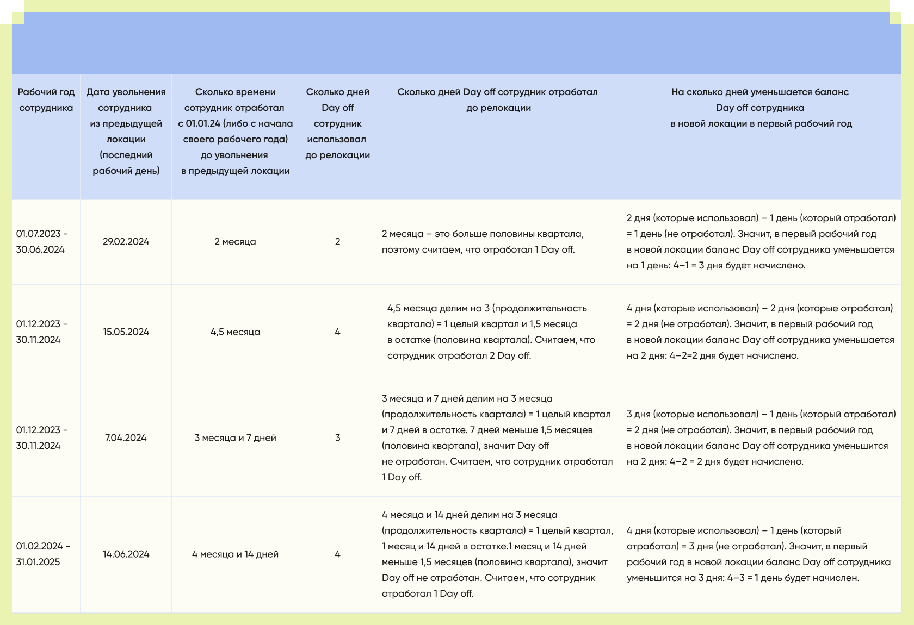

day
off
What Day Off is, the main rules of use, accrual process, and examples of transferring days after relocation.
where there's on
there's also off

time to focus on what really matters.
1
Main
Rules
Day off – these are additional days off
with full salary retention, which an employee
takes in agreement with their manager.
with full salary retention, which an employee
takes in agreement with their manager.
1
From the first day of the work year, the employee has 4 day off available.
2
The work year does not coincide with the calendar year. It starts on the employee’s first working day
and ends 12 months later.
For example, if the employee started on December 2, 2023,
their first work year
ends on December 1, 2024.
their first work year
ends on December 1, 2024.
3
Unused day off cannot be carried over
to the next work year.
to the next work year.
4
The balance of day off for the current work year can be viewed
in the “Absences” tab of the “Personal Data” section
in
Wplan.
Wplan.
2
Day off
Accrual
Procedure
One Day off is considered accrued if the employee has worked at least 1 day
within a quarter (3 months).
Accordingly, all 4 Day off are accrued if the employee has worked the full work year.
However, an employee may take Day off in advance. For example, if they worked 1 quarter but took 2 Day off, only the first one is considered accrued, while the second was taken in advance.
If an employee transfers to a new office with a new employment date, any unused Day off from the old office expire.
In the new office, from the first working day, the employee is granted 4 Day off, but any days already taken in advance
before the transfer will be deducted from this amount.
Example
The employee’s work year started on 01.02.2024.
They were transferred to a new office with a new employment date. The first working day in the new office was 06.05.2024.
Before that date, the employee used 4 Day off but worked only 1 quarter and 5 days. This means they earned 2 Day off, while the other 2 were taken in advance.
Therefore, after the transfer, they will receive: 4 (number of Day off per work year) – 2 (Day off taken in advance) = 2 Day off.
This is the number of Day off available to the employee for the work year from 06.05.2024 to 05.05.2025.
At the start of the next work year, the employee will again receive 4 Day off.


3
Examples
of Day off
Accrual
after
Relocation
Day off were introduced in WPlan on 01.01.2024. This date is used as a starting point for Day off accrual for employees whose work year began before Day off were introduced.
If an employee’s work year started after 01.01.2024, Day off are accrued
from the start date of their work year.
from the start date of their work year.
